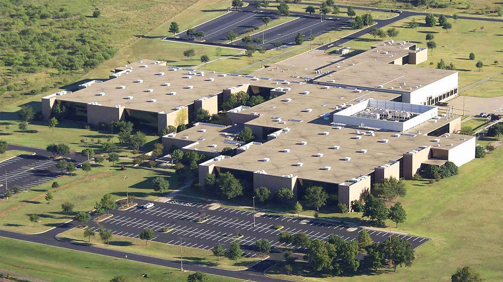

UNT REU: Making Generative AI Responsible
Contact Us
For questions regarding the REU program or the application process, please contact:
Dr. Yunhe Feng
Email: yunhe.feng@unt.edu
Mailing Address:
Department of Computer Science and Engineering
University of North Texas
3940 N Elm St
Denton, TX 76207
Location
The program is hosted by the Department of Computer Science and Engineering at the University of North Texas in Denton, Texas.
